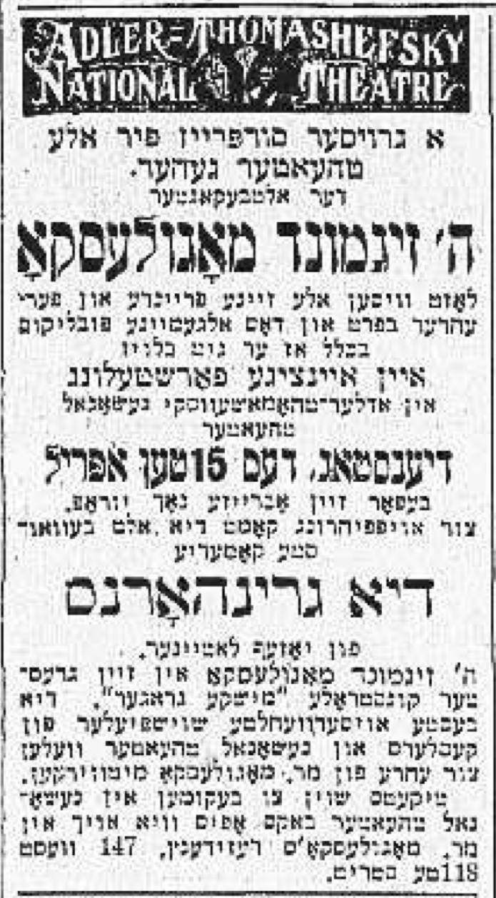

39 January 30th, 1947
Link to Forverts edition
Playing two roles in a benefit performance for Mogulesko. – How Mogulesko ruled over the stage and how his wife ruled over him at home.
Going around like a beggar without consistent work was, to me, always the hardest thing in the world. Even when I was sure that it wouldn’t last long and some theater would hire me again, I felt like an outcast and it was deeply unpleasant to have nothing at all to do. I was always like this since when I was young, and my story of 77 years1 has not yet fallen heavily on my narrow shoulders. In thinking back on my life, I am not Sam Kestin, the comedian who made a name for himself on the Yiddish stage, but Shmuel’ik Konstantinovsky, the possessor’s little son, who always loved to frolic and make mischief.
And I confess, that even now, there are moments where I forget who I am, and I feel like I am still that little boy Shmuel’ik Konstantinovsky, and I’m only playing the role of a man named Sam Kestin who is already, borukh hashem, a Jew of 77 years…
Of all the roles which I have played on the Yiddish stage, I was given yet another role still - to play none other than a director2….
But let’s circle back to the Novelty Theater, where I performed when Jacob P. Adler and Boris Thomashefsky were on bad terms with their wives. When the Novelty Theater closed before the season was over, I felt like a spare, and I became uneasy and restless - I was never able to sit still, neither at home nor in the cafe where the actors usually hung around in their free time3.
You must understand that not having any work when other actors did is, for an actor, one of the worst things possible. Nu, as usual, I went back to Philadelphia where my friend Anshel Schorr saw to it that I would, from time to time, play a performance and get my share of applause which I always longed for so much when I was out of work. And when I had nothing to do in Philadelphia, I came back to New York. And so I ran back and forth from one city to the other, never getting any rest. Which is to say - other actors were playing, but I was not!
And believe me, the notion of a getting paid to perform interested me less than performing itself.
Around that time, Mogulesko appeared in Joseph Lateiner’s famous play called Di Greenhorns, oder Mishke un Moshke. This performance was a benefit concert for the great artist, who was in such a state4 that benefit concerts were his only source of income. And when he asked me if I would play the role of the “little merry negro”5, who sings and dances and brings joy to everyone, in the performance, I assured him that he could count on me, and when they called me in for rehearsals, I would be there.
No actor turned down an offer to play in a benefit performance for Mogulesko. Even Boris Thomashefsky didn’t turn it down, and it soon enough it was decided that he, Thomashefsky, would play the role of the fellow called "Monkey Joe"6. This is what he promised Mogulesko, and the great comedian7 was very pleased because he thought Thomashefsky was very well suited for the role of "Monkey Joe".

Mogulesko did not take any pleasure asking actors to perform in his benefit performance. He was always afraid that they would turn him down, and for him this would of course be a great offense, and he would be completely mortified. Indeed, this is why his wife Molly8 took on this task on his behalf and kept his involvement to an absolute minimum.
Generally speaking, the great artist Mogulesko was under his wife Molly’s control. He treated whatever she said as law. And he always listened to her, like a good little obedient boy. And he gave her every penny of his earnings to put away. Whenever he had to buy something for himself, he had to go to her and ask for money. She counted every cent and kept track of all the money he spent. She was very stingy, never spending even one extra cent, and he had to give her an exact account of every penny he spent.
It’s possible that she was so frugal because she was always afraid that, any any moment, her husband’s illness would render him unable able to perform and they would have nothing left to live on, and they would have to go to others for help. She was simply taking precautions so that, if they fell on even harder times, they would not starve to death. This was the situation in which the best Yiddish character-comedian, the God-blessed artist Mogulesko, found himself, after all those years playing on the Yiddish stage and bringing such joy to the hearts of thousands and thousands of Jews across the whole world.
Nu, I remember one time when I went to the theater cafe on 2nd Avenue9 I spotted Mogulesko sitting with his wife, and beside them sat the Yiddish journalist Itzhik Gonikman. Molly was visibly upset, and Itzhik Gonikman tried to calm her down, but it was no use.
Mogulesko himself didn’t say a word. He was just sitting there, preoccupied and silent. But as soon as he saw me, he started to speak:
– You hear, Kestin - he said to me, - I too am a victim of Thomashefsky’s love affair…
At first I didn’t understand what he meant - I couldn’t fathom how he could also be a victim of Thomashefsky’s affair with the young prima donna Regina Zuckerberg. But soon it all became clear. Indeed, Mogulesko said again:
– Imagine this - he said - I was sure that Thomashefsky would of course keep his word and he would play the role of "Monkey Joe" in my benefit performance just like he promised. But he screwed me - he ran off somewhere with Regina Zuckerberg and no one has any idea where they are… Oy, romance, romance…! - he wailed.
He then become very despondent, and he had no earthly clue what to do about the whole situation.
– How can we put on the show without him? What will I do? How am I going to get someone else to play "Monkey Joe" on such short notice?
Mogulesko was always got like this when he something happened that he did not expect - he become completely helpless and didn’t know how to get out of the situation.
When I heard what was happening, I reassured him:
– Don’t worry, Mogulesko, - I said to him. - Your benefit performance will still be able to go on without Thomashefsky. I will play the role of "Monkey Joe", and you can be sure that even though Thomashefsky won’t be in the show, you will still do well at the box office. The audiences don’t come to see Thomashefsky - they come to see you…
I made the last remark mostly to reassure Molly because she, generally speaking, took a great deal of interest in the box office. She was really pleased that I was prepared to “rescue the situation.” Mogulesko was also very pleased, but he wanted to know what we’d do about the role of the “little merry negro.”
– And who will play the little negro? - he asked.
– What do you mean who? - I answered. - Also me! Who else if not me?
– But how will you be able to play both roles? - he asked, shrugging his shoulders. - It will be difficult.
I knew it was going to be very hard without him telling me, but my desire to help Mogulesko and take away his worries was so great that nothing could talk me out of it. And indeed, right there on the spot, I showed him how, in the prologue during the scene changes, I would be able to play the role of the “little merry negro” and immediately after do a quick change into the role of "Monkey Joe" - the role Thomashefsky was supposed to play.
Like every one of Mogulesko’s benefit performances, this one too ended up being a great success. And when we all met up afterwards in the restaurant, Mogulesko thanked me profusely10, and he said that he wanted everyone to know that I had saved him and he would never forget it.
I was truly delighted that I was able to do such a toive for Mogulesko. And when he told me that it would be his pleasure to return the toive somehow, I immediately thought of something he could do for me:
– If so, - I said - I do have a request of you.
– What request? - Mogulesko asked. - Don’t be shy at all, tell me. You can be sure that I will not let you down.
My request was this - after Pesach, the Arch Street Theater in Philadelphia would be holding a benefit performance for me11. This had already all been set up with Anshel Schorr. I wondered if he might come there and put on Lateiner’s Di Greenhorns, oder Mishke un Moshke for it.
– This would really be a huge toive for me. - I told him. - You would really save me too, because, as you know, I’ve had a really bad season this year.
Mogulesko didn’t even need to think about it. He immediately answered:
– Nu, of course I will come and play! I wouldn’t be worth my weight in gold12 if I told you no…
In that moment, I realized that Molly was cringing and was really displeased that he promised right there on the spot to come to Philadelphia to play in my benefit performance. Mogulesko noticed his wife cringing as well and that she was very unhappy. And because of this, he mentioned that I had actually played in many of his benefit performances already. Speaking with a compassionate expression on his face, he looked at his wife as if to say that this time she should support him and not say no when he said yes. And since Molly said nothing at all, he took it upon himself and laid his hands on my shoulders and said:
– I will come, I will come!…
There are no words to describe the silent scene that then took place between Mogulesko and Molly. You had to see it with your own eyes. It’s just not possible to describe. Molly’s gaze reflected both her anger at me, and at the same time also her pity for her husband. And when she realized there was nothing she could do about it, she simply said:
– He is such a sick man, so very sick… He needs to be taken care of, taken care of very well…
In that moment, I began to understand her. And I pitied them both - both Mogulesko and his wife.
And now we are coming to the last moments of my acquaintanceship with Mogulesko. But I’ll save this for the next article.
In January 1947 when this article was published, he would have been 77 years old, soon to be 78 in April↩︎
or, producer↩︎
He is referring, almost certainly, to Cafe Royal↩︎
extremely ill↩︎
לוסטיק נעגערעל↩︎
מאָנקי–דזשאָו↩︎
Mogulesko↩︎
Again, likely Cafe Royal↩︎
This is actually meant to be an idiom that I could not translate: האלטן זילך לעבן מיך↩︎
Mogulesko’s benefit performance was on April 15th, 1913, and Pesach that year was April 21-29th. So, Sam’s benefit performance in Philadelphia is likely in early May 1913.↩︎
Again another tricky idiom was here, so I added this instead↩︎